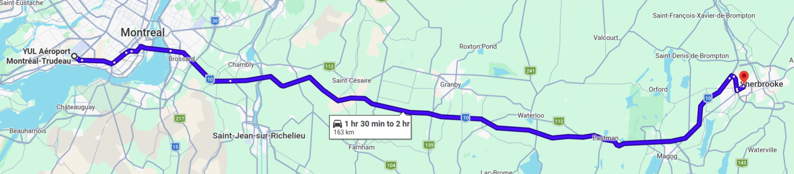
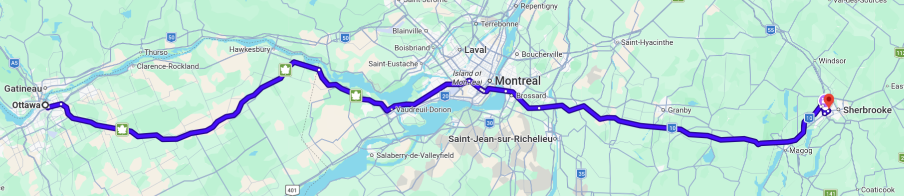
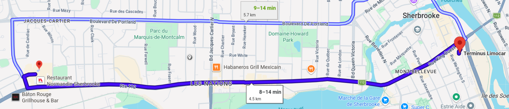

Travel Information
Entering Canada
Those travelling to Canada must apply to obtain either a Temporary Resident Visa (TRV) or an electronic Travel Authorization (eTA)—not both.
We urge all participants requiring a visa to enter Canada to submit their visa applications as soon as possible. To find out whether you need a TRV or an eTA for Canada, please visit the IRCC website: Find out if you need a visa to travel to Canada.
If you need an entry visa:
Participants requiring a visa to enter Canada will need to apply for the visa as soon as possible and will be provided with a personalized individual visa assistance letter (upon request, at tqc2026@usherbrooke.ca). The letter will need to be included in the visa application.
Make sure to apply as soon as possible but no later than 8 weeks in advance of your arrival date to allow enough processing time.
With some exceptions, most applicants who wish to travel to Canada are required to provide their biometrics (fingerprints and photo). More information is available at: Facts about biometrics. The following individuals are exempt from biometric enrolment: (i) Heads of State and Heads of Government; and (ii) designated delegates, alternates and advisers of Member States who qualify for or hold a diplomatic or official visa. Click on the following link to find out if you need to give biometrics.
How to apply for a temporary resident visa (TRV)
To assist with visa issuance, TQC will provide an invitation letter (upon request) to registered participants. This letter is mandatory for your online TRV application.
Unless you are a visa-exempt visitor, you are required to apply online for your TRV. We encourage participants to use the following method to apply for the visa to enter Canada:
- Connect to Immigration, Refugee and Citizenship Canada (IRCC) secure network through this link: Sign in to your IRCC secure account.
- Register for an account (GCKey).
- Follow the online questionnaire to identify yourself.
If you need to provide biometrics, you will be required to report to the nearest Visa Application Centre to provide this information in person, once a visa officer provides you with a Biometric Instruction Letter (BIL). You cannot make an appointment for biometrics until you receive a BIL. Your visa application will not go forward without any required biometric information.
Please note that you will NOT be able to board your flight to Canada in the absence of a valid visa, and that you will not be able to obtain a visa upon your arrival in Canada.
If you need an Electronic Travel Authorization (eTA):
Visa-exempt foreign nationals travelling to or transiting through Canada by air must have an eTA. Applying for the eTA is an online process which takes only a few minutes to complete.
The eTA will be valid for 5 years or upon expiry of your passport whichever comes first. There is a fee of CAD 7.00 for the eTA.
You are encouraged to apply for your eTA well in advance of flying to Canada. To find out more or to apply for an eTA, visit the IRCC website: Electronic Travel Authorization.
Please note that you will be required to have your eTA before you can board your flight to Canada.
Getting to Sherbrooke from Montreal

Sherbrooke is located about a 1.5-hour drive from Montreal with no traffic. There is a bus service from Montreal but no train service. To assist you in planning your trip efficiently, here are a few resources that might be useful for traveling between Sherbrooke and Montreal.
Keep in mind that we highly encourage you to be mindful of the environment and take public transportation as much as possible.
From Montreal airport
The easiest and cheapest way to get to Sherbrooke is to take the 747 bus to downtown Montreal (800 De La Gauchetière Street West), and then take the Limocar as described below.
Aeroshuttle is a shuttle service between the regions of Sherbrooke, Magog/Orford, Bromont, Granby, L’Ange-Gardien, Richelieu and Montreal’s Pierre Elliott Trudeau International Airport. The shuttle is available to and from the airport, 24/7 and 365 days a year. It works with your flight information to bring you directly to the hotel. The cost is $125 one way or $175 return.
Taxi navette offers airport transfer services 24 hours a day, 7 days a week.
Car rental: Several options are available; you can view them here. Note that we do not recommend this option since it is not environmentally friendly.
From downtown Montreal
- Limocar is an interurban bus service operated by Transdev Canada. It is recommended to take the route departing from downtown Montreal (800 De La Gauchetière Street West) to the Limocar terminal in Sherbrooke. The fare to the Sherbrooke terminal is $50.05 (or $42.54 for students) for a one-way ticket, and $90.10 (or $76.58 for students) for a round-trip ticket. From the terminus, the Delta Hotel is 4 km west along King Street West, the main thoroughfare, at Place des Congrès.
Note: Local buses cost $4 cash.
IMPORTANT for those taking the BUS from Montreal to Sherbrooke
Limocar has relocated its bus stop in Montreal – it is now situated at 800 de la Gauchetière O., and you should reach it from Bonaventure metro station. Please consult their website carefully. News about the changes can be found here. Instructions how to get to the new bus stop at 800 de la Gauchetière O. are in French only, here.
From anywhere in Montreal
- Kangaride is a long-distance ridesharing service. You can register for it here.
Getting to Sherbrooke from Ottawa (If you’re attending QCrypt)

Ottawa is further away from Sherbrooke than Montreal, so it typically takes from 3h15 to 4h to get to Sherbrooke from there. There are also a few possibilities to get to Sherbrooke from Ottawa.
Use Rome2Rio to plan your trip.
Use Kangaride, VIA Rail, or the Orleans Express bus to reach Montreal, then continue to Sherbrooke.
Getting to the Delta Hotel from Sherbrooke bus station (Terminus Limocar)

In many options listed above, you will end up at the Sherbrooke bus station. From there you can take a local bus that costs $4 to reach the Delta Hotel.
All prices listed on this page are based on information available as of the date of publication. Prices are provided for informational purposes only and are subject to change at any time without notice. We do not guarantee the continued accuracy or availability of the prices displayed.